Gambar layar memakai data contoh; nama sekolah, guru, dan isi laporan di aplikasi Anda akan berbeda.
Bagian 1Mengenal aplikasi CERMAT
CERMAT terdiri dari dua bagian dalam satu aplikasi. Pustaka Digital CERMAT berisi folder materi program (Silabus, Modul, Bahan Tayang, Lembar Kerja). Laporan CERMAT dipakai untuk menyusun, mengesahkan, dan mengunduh laporan 22 pendampingan. Satu akun dipakai untuk keduanya.
Bisa dibuka di HP maupun laptop. Akun (username dan password awal) diberikan oleh admin program.
Bagian 2Memasang aplikasi di HP dan laptop
Setelah dipasang, CERMAT muncul sebagai ikon di layar utama dan terbuka seperti aplikasi biasa, tanpa perlu mengetik alamat. Memasang tidak lewat Play Store atau App Store dan tidak memakan banyak memori.
HP Android (Google Chrome)
- 1Buka Chrome, ketik alamat pusatbelajargurukudus.github.io/cermat, lalu tunggu halaman terbuka.
- 2Ketuk tombol menu ⋮ (titik tiga) di kanan atas.
- 3Pilih Instal aplikasi. Bila tidak ada, pilih Tambahkan ke layar utama, lalu pilih Instal.
- 4Ketuk Instal. Ikon CERMAT muncul di layar utama. Selanjutnya buka CERMAT dari ikon itu.
(atau Tambahkan ke layar utama)
iPhone dan iPad (Safari)
- 1Buka Safari (bukan Chrome), ketik alamat pusatbelajargurukudus.github.io/cermat.
- 2Ketuk tombol Bagikan (kotak dengan panah ke atas) di bilah bawah. Pada iOS versi terbaru, tombol ini ada di menu ••• di sebelah kolom alamat.
- 3Gulir daftar pilihan, lalu ketuk Tambahkan ke Layar Utama.
- 4Ketuk Tambah di kanan atas. Ikon CERMAT muncul di layar utama.
pusatbelajargurukudus.github.io/cermat
Laptop atau komputer (Chrome / Microsoft Edge)
- 1Buka alamat pusatbelajargurukudus.github.io/cermat di Chrome atau Edge.
- 2Klik ikon instal (gambar layar dengan panah ke bawah) di ujung kanan kolom alamat, lalu klik Instal.
- 3CERMAT terbuka di jendela sendiri dan muncul di menu Start / Launchpad. Tanpa dipasang pun, CERMAT tetap bisa dipakai lewat browser biasa.
Bagian 3Masuk (login)
- 1Buka aplikasi CERMAT. Halaman Masuk tampil di bawah kepala halaman biru.
- 2Ketik username dan password dari admin. Ketuk ikon mata untuk melihat password yang Anda ketik, supaya tidak salah huruf.
- 3Ketuk Masuk. Nama Anda tampil di kanan atas (di HP: di bawah judul).

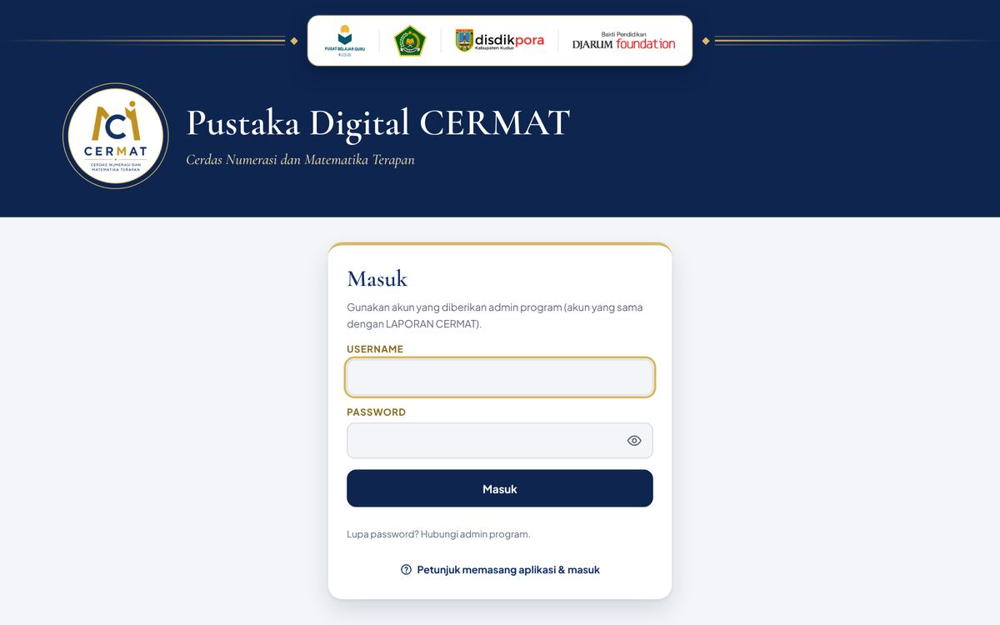
Bagian 4Akun Saya: profil, ganti password, keluar
- 1Ketuk nama Anda di kanan atas (di HP: di bawah judul).
- 2Bagian Profil: isi atau perbaiki NIP, lalu ketuk Simpan profil. NIP ini tercetak di Lembar Pengesahan laporan. Nama lengkap hanya bisa diubah admin.
- 3Bagian Ganti password: isi password lama, password baru (minimal 6 karakter), dan ulangi password baru. Ketuk Ganti password.
- 4Untuk keluar dari akun, ketuk Keluar. Lakukan ini bila memakai HP atau laptop milik orang lain.
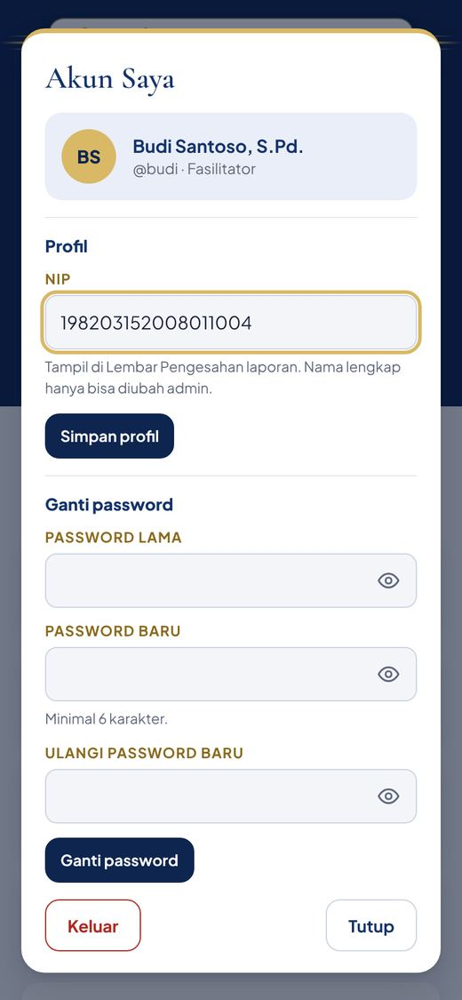
Bagian 5Halaman utama dan Panel Admin
- 1Setelah masuk, kartu pertama di Folder utama adalah Pantau Laporan: membuka Laporan CERMAT untuk melihat dan mengunduh laporan semua sekolah.
- 2Kartu Progres Pendampingan menampilkan nilai, capaian, dan bintang per sekolah (lihat Bagian 13).
- 3Di bawah folder tampil Panel Admin: Kelola Pengguna (membuka Laporan CERMAT) dan Atur Folder (mengubah kartu folder di halaman utama).
- 4Menu Laporan CERMAT untuk admin: Kelola Pengguna, Data Sekolah, Lihat Laporan, Unduh Laporan, Progres. Menu Pengaturan Program ada di lingkaran nama, kanan atas.
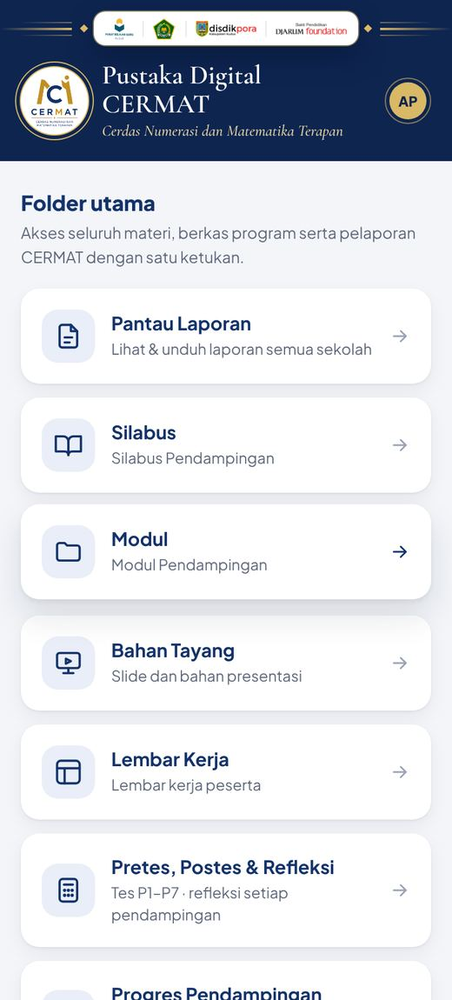
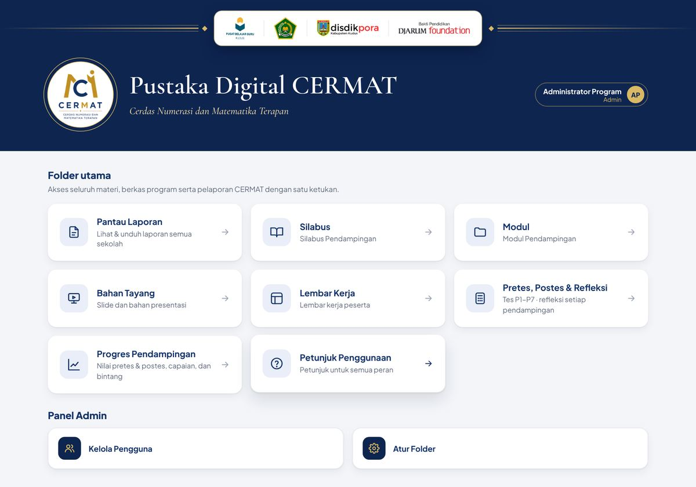
Bagian 6Kelola Pengguna
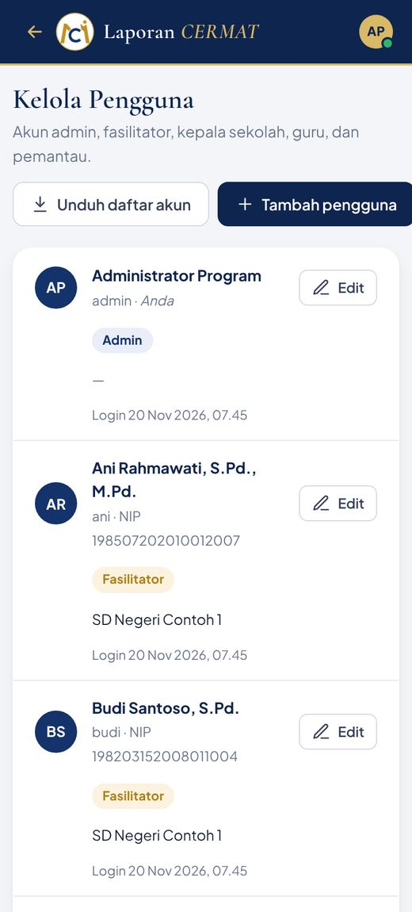
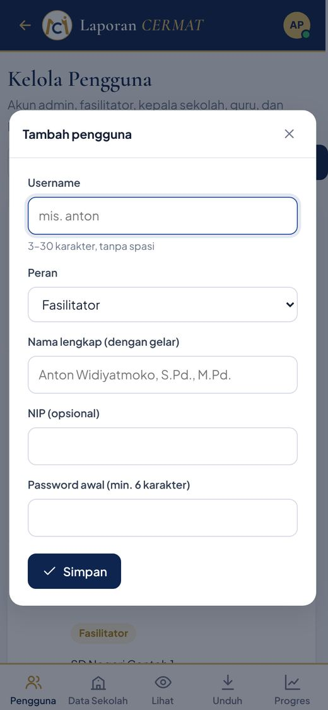
- 1Ketuk Tambah pengguna. Isi username (3–30 karakter, tanpa spasi), peran, nama lengkap dengan gelar, NIP (opsional), dan password awal (minimal 6 karakter).
- 2Peran Kepala Sekolah dan Guru wajib dipasangkan dengan sekolahnya. Akun Guru cukup satu per sekolah, dipakai bersama.
- 3Ketuk Edit pada pengguna untuk mengubah data, menonaktifkan akun, atau Reset password.
- 4Sampaikan username dan password awal kepada pemiliknya secara pribadi.
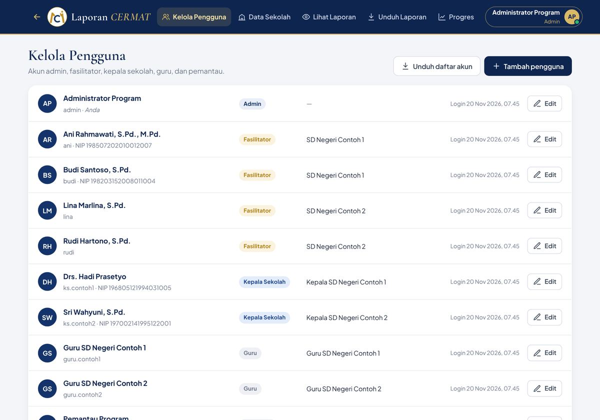
Bagian 7Unduh daftar akun (PDF)
- 1Di Kelola Pengguna, ketuk Unduh daftar akun.
- 2Centang jenis akun yang akan dicetak, atau Pilih semua. Biarkan Hanya akun aktif tercentang bila akun nonaktif tidak perlu dicetak.
- 3Isi password awal yang dicetak (bawaan: password awal program).
- 4Ketuk Unduh PDF. Setiap jenis akun dimulai di halaman baru, lengkap dengan kop dan keterangan cara login.
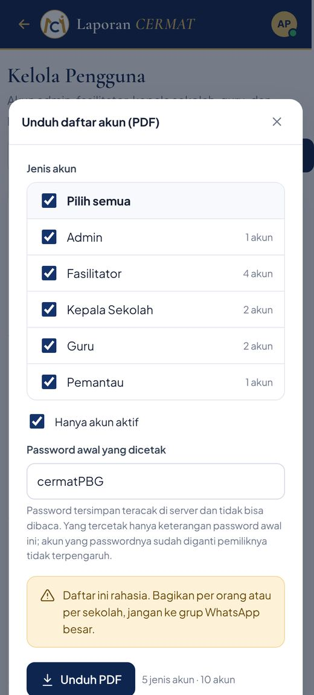
Bagian 8Data Sekolah
- 1Ketuk Tambah sekolah untuk mendaftarkan sekolah binaan.
- 2Pasangkan Fasilitator 1 dan Fasilitator 2. Hanya fasilitator yang dipasangkan yang bisa mengisi laporan sekolah itu.
- 3Nama dan NIP kepala sekolah serta data guru biasanya dilengkapi fasilitator; admin juga bisa mengubahnya.
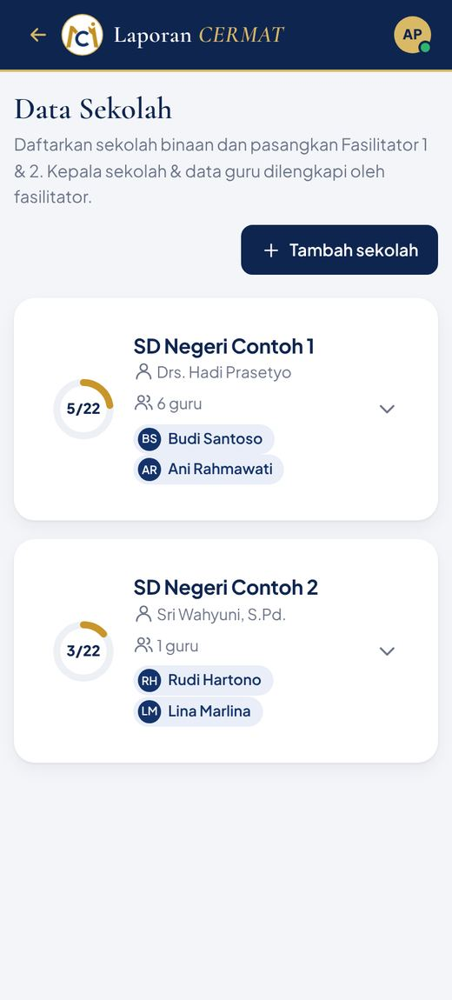
Bagian 9Pengaturan Program
Ketuk lingkaran nama di kanan atas Laporan CERMAT, lalu Pengaturan Program. Di sini admin mengunggah gambar kop dan mengisi identitas program. Pengaturan berlaku untuk semua laporan dan daftar akun.
Bagian 10Memantau dan isian darurat
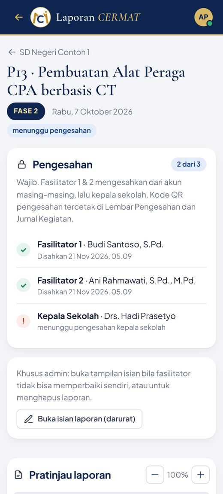
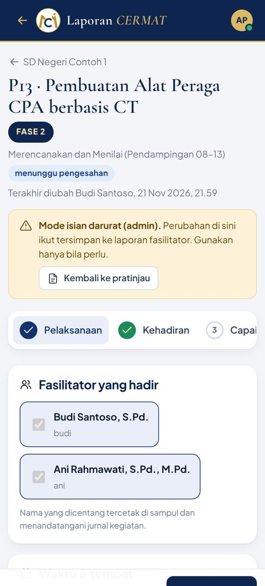
- 1Lihat Laporan dan Unduh Laporan sama seperti untuk pemantau: ringkasan semua sekolah, tabel P1–P22, dan unduh ZIP.
- 2Membuka laporan menampilkan pratinjau PDF dan kotak Pengesahan (hanya dilihat).
- 3Bila fasilitator tidak bisa memperbaiki sendiri, ketuk Buka isian laporan (darurat). Tampilan isian terbuka dengan peringatan kuning; perubahan ikut tersimpan ke laporan fasilitator.
- 4Selesai memperbaiki, ketuk Kembali ke pratinjau. Laporan juga bisa dihapus dari langkah 7 (masuk Sampah Google Drive, bisa dipulihkan 30 hari).
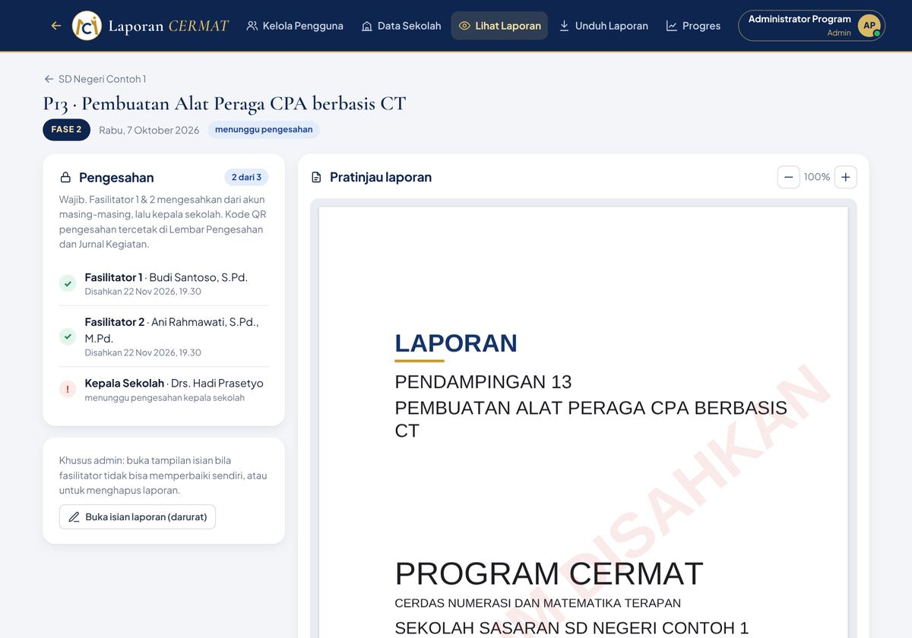
Bagian 11Tautan Pretes, Postes & Refleksi
- 1Siapkan satu Google Form per pendampingan (P1–P7) berisi pertanyaan Nama lengkap, Asal sekolah, dan Jenis tes (pilihan Pre-tes / Post-tes). Atur form sebagai Kuis supaya skor terbaca.
- 2Jadikan akun Google pemilik Apps Script sebagai editor setiap form (Google Form → titik tiga → Tambahkan kolaborator).
- 3Di Pustaka CERMAT, buka Pretes, Postes & Refleksi lalu ketuk Atur tautan. Tempel tautan edit setiap form (alamat saat form dibuka untuk diedit, berakhiran /edit), lalu Simpan.
- 4Bagian Refleksi di dialog yang sama berisi satu kolom per pendampingan (P1–P22). Form refleksi cukup punya pertanyaan Nama (jawaban singkat) dan Asal sekolah; tidak perlu Kuis. Pertanyaan lain bebas: skala, pilihan, kotak centang, petak, atau jawaban terbuka.
- 5Server memeriksa setiap form. Catatan di bawah kolom memberi tahu bila pertanyaan Jenis tes atau Asal sekolah tidak dikenali, atau form belum berupa Kuis.
- 6Tombol Lihat hasil di setiap kartu menampilkan nilai terendah, tertinggi, dan rata-rata pretes & postes per sekolah dan gabungan, langsung dari Google Form.
- 7Nilai dan refleksi masuk ke laporan setiap sekolah otomatis. Sekali setelah memasang versi ini, jalankan fungsi pasangNilai di editor Apps Script: pemicu tiap 15 menit terpasang dan langsung berjalan sekali.
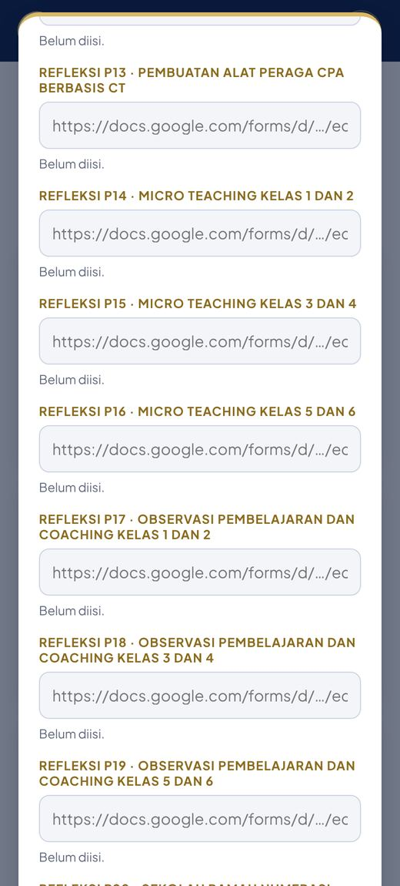
Bagian 12Atur Folder di Pustaka CERMAT
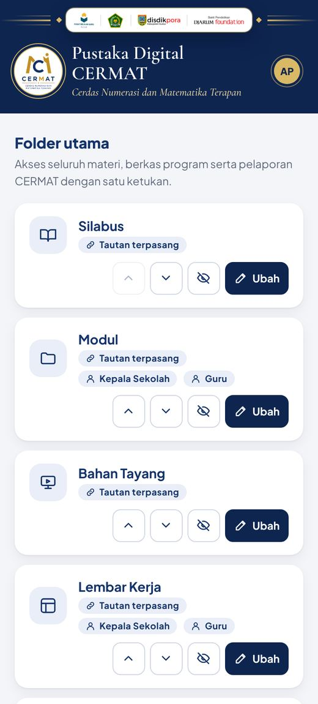
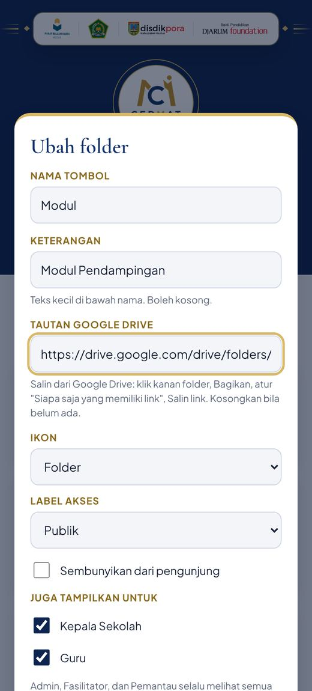
- 1Di halaman utama, ketuk Atur Folder. Pertama kali, isi repositori (pusatbelajargurukudus/cermat) dan token GitHub, lalu Masuk.
- 2Setiap folder punya tombol naik/turun (urutan), mata (sembunyikan), dan Ubah.
- 3Di Ubah: isi nama tombol, keterangan, tautan Google Drive, ikon, dan label akses. Centang Kepala Sekolah dan/atau Guru bila folder itu juga untuk mereka.
- 4Ketuk Simpan di jendela Ubah folder, lalu Simpan ke GitHub di bilah bawah untuk menerbitkan perubahan. Tampilan diperbarui dalam 1–2 menit.
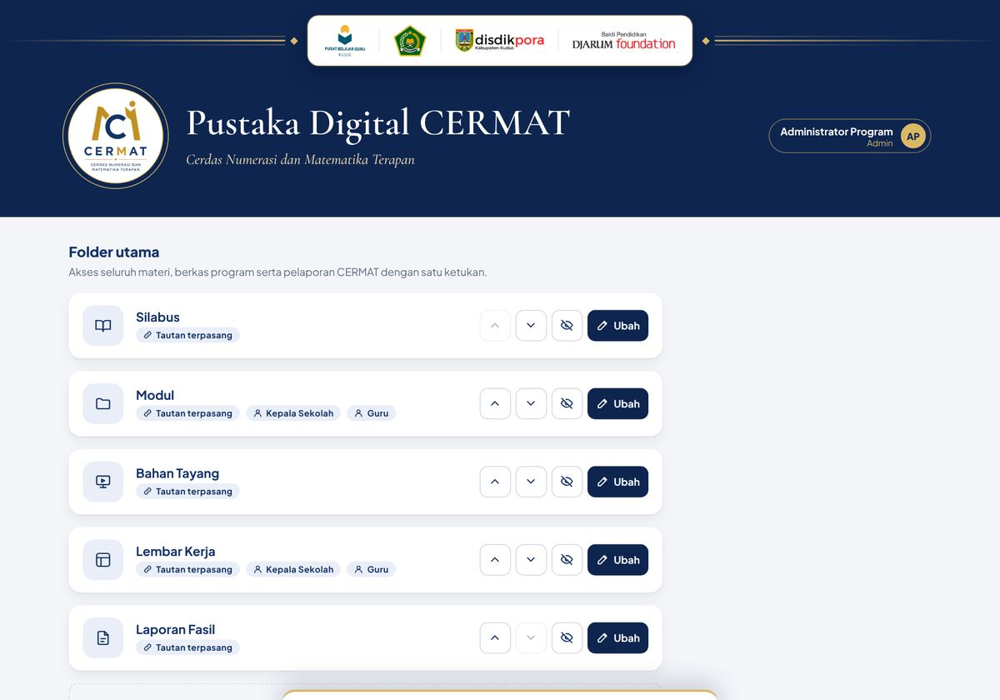
Materi di dalam aplikasi
- 1Kartu yang berisi tautan folder Google Drive (Modul, Lembar Kerja, Bahan Tayang, Silabus) membuka daftar file di dalam CERMAT. Folder harus dibagikan "Siapa saja yang memiliki link" agar pratinjau tampil.
- 2Keempat kartu boleh menautkan folder yang sama, misalnya PUSTAKA CERMAT (berisi FASE 1, FASE 2, …, lalu folder setiap pendampingan). Setiap kartu menyaring isinya sesuai namanya: bahan tayang/PPT/slide, LK/lembar kerja, modul, silabus. File tanpa jenis masuk kartu Modul; file refleksi tidak ditampilkan.
- 3Nomor pendampingan dibaca dari nama subfolder atau file: P3, Pendampingan_03, 03. …, rentang P1–P7, Fase 1, atau Fase 1-3. Folder dibaca sampai 4 tingkat; pintasan folder ikut dibaca.
- 4File tanpa nomor selalu terbuka untuk guru dan kepala sekolah. Untuk menguncinya per pendampingan, ketuk tombol Rentang di samping file lalu pilih P awal–P akhir.
- 5Sekali setelah pemasangan, jalankan fungsi pasangMateri di editor Apps Script: indeks materi dibuat, pemicu pembaruan tiap jam terpasang, dan log menampilkan isi setiap kartu untuk diperiksa.
Bagian 13Progres Pendampingan
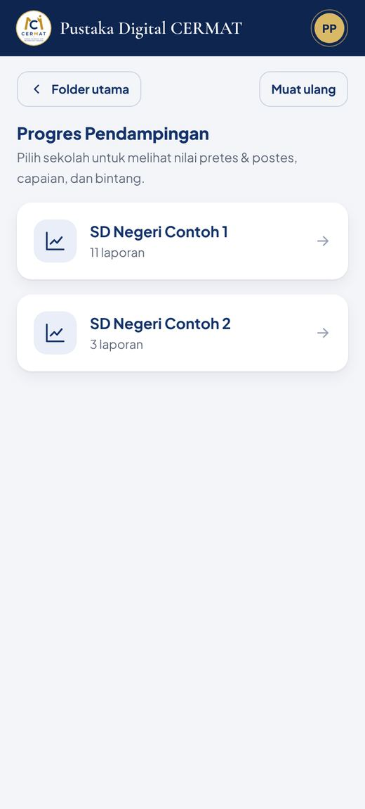

- 1Di halaman utama, ketuk kartu Progres Pendampingan. Pilih sekolah yang ingin dilihat.
- 2Tampil kartu Rekap semua pendampingan dan daftar P1–P22. Setiap pendampingan bertanda disahkan, sementara* (laporan belum disahkan, angka masih bisa berubah), atau belum ada laporan.
- 3Ketuk satu pendampingan, lalu pilih tombol Pretes & Postes, Capaian, atau Bintang. Pendampingan tanpa tes (P8–P22) hanya punya Capaian dan Bintang.


- 4Pretes & Postes: rata-rata pretes dan postes, kenaikannya, lalu nilai setiap peserta beserta selisihnya (▲ naik, ▼ turun). Tanda – berarti tidak mengerjakan.
- 5Capaian: setiap indikator dengan statusnya (Sangat memahami, Memahami, Cukup, Kurang, Belum memahami). Label dari refleksi berarti status dihitung dari jawaban refleksi peserta.
- 6Bintang: bintang setiap peserta yang hadir di pendampingan itu.
- 7Rekap semua pendampingan: tombol Bintang berisi peringkat total bintang (nilai sama = peringkat sama, nomor tidak melompat; – = tidak hadir), tombol Pretes & Postes berisi grafik rata-rata P1–P7.
- 8Ketik sebagian nama di kotak Cari nama. Nilai dan refleksi masuk otomatis dari Google Form; ketuk Perbarui data untuk mengambil yang terbaru sekarang.
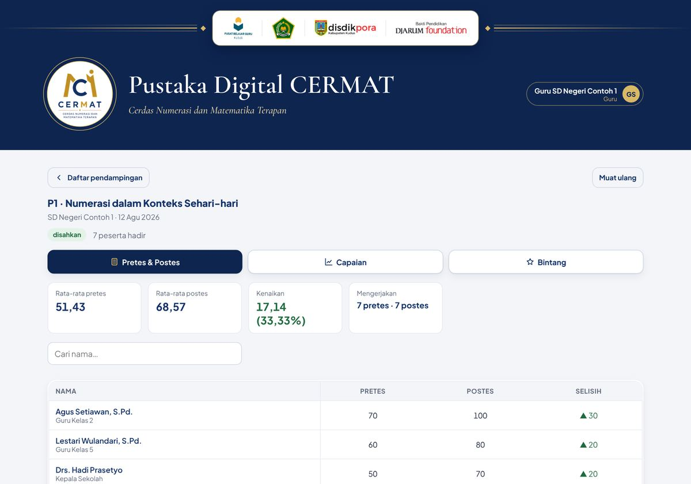
BantuanBila ada kendala
| Lupa password | Hubungi admin program. Admin akan memberi password baru; setelah masuk, segera ganti lewat Akun Saya. |
|---|---|
| Pratinjau laporan tidak muncul | Periksa sinyal internet, lalu muat ulang halaman. Pratinjau disusun langsung di perangkat, jadi butuh beberapa detik. |
| Tampilan belum berubah setelah ada pembaruan | Tutup aplikasi sepenuhnya, lalu buka lagi. Bila belum berubah, ulangi sekali lagi. |
| Folder tidak bisa dibuka / diminta izin | Folder Google Drive mengikuti izin akses. Pastikan Anda memakai akun Google yang sudah diberi akses, atau hubungi admin. |